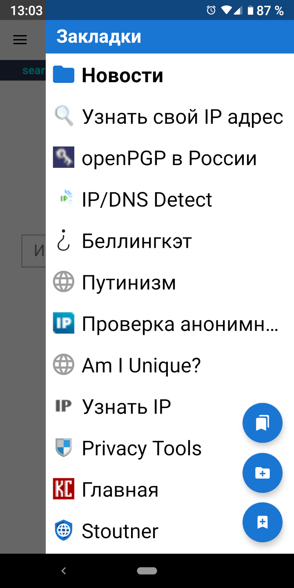

К закладкам можно получить доступ из боковой панели, выполнив свайп от правой части экрана.
Нажатие верхней всплывающей кнопки позволит совершать над закладками такие действия, как перемещение и удаление. Также из этого меню есть возможность загрузить представление базы данных закладок. Это отобразит закладки так, как они существуют в базе данных SQLite, что может быть полезным для устранения проблем с импортом и экспортом закладок.